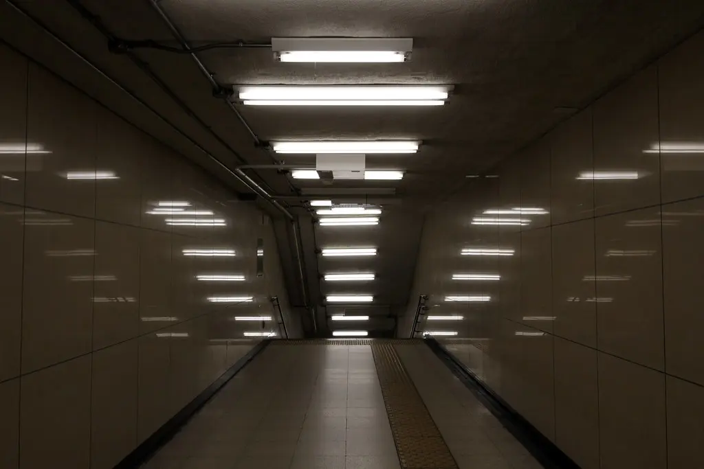

목업 도구
밝음
어두움
보통
코믹
진지
목차

The Suspects
오늘은 어떤 사건을 맡을까요?
등장인물 사진은 AI가 만든 가상의 인물입니다. 실존 인물과 관계없습니다.
사건 고르기
사건 01
사라진 운영 DB
오픈 전날 밤 운영 DB가 지워졌다. 감사 로그도 비었다.
선택됨
사건 02
아파트 살인사건
단지 안에서 일어난 사건. 이웃 모두가 서로를 알고 있다.
선택됨
사건 03
택배 도난 소동
현관 앞 택배가 계속 사라진다. 범인은 누구일까?
선택됨
사건 04
호텔 밀실
안에서 잠긴 객실에서 투숙객이 사라졌다.
선택됨
직접 만들기
실험실
결과가 들쭉날쭉할 수 있어요.
80자 남음
사건 생성
주제를 입력하세요
분위기
코믹
보통
진지
난이도
쉬움
보통
어려움
플레이 시간
20분
40분
1시간
이어하기
저장된 사건 없음
클리어 이력
아직 클리어한 사건 없음
사건 시작
사건을 고르세요